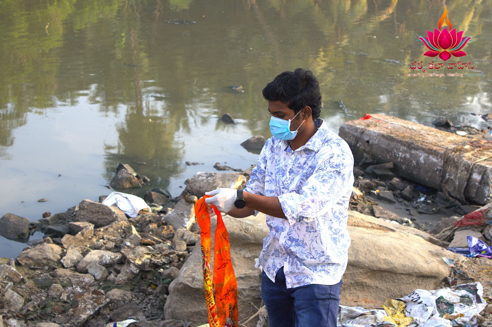
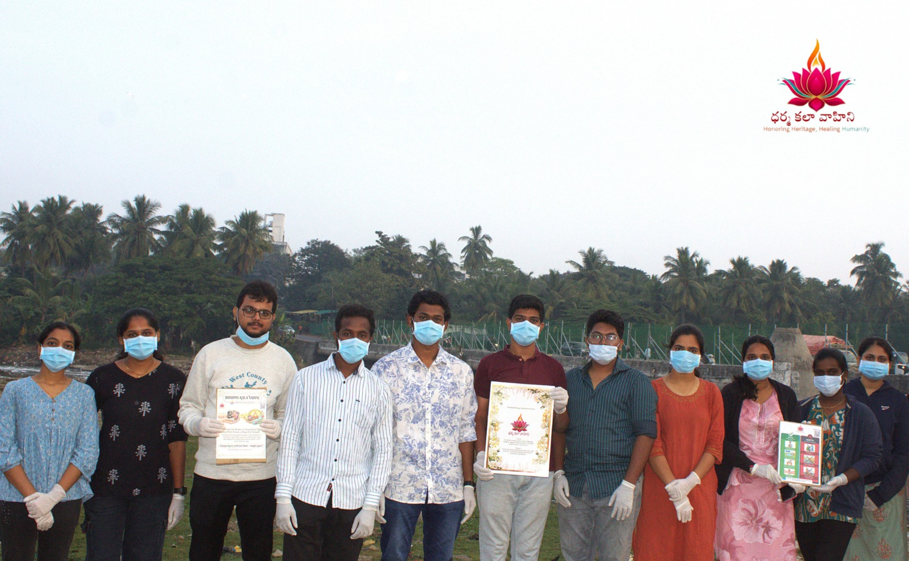
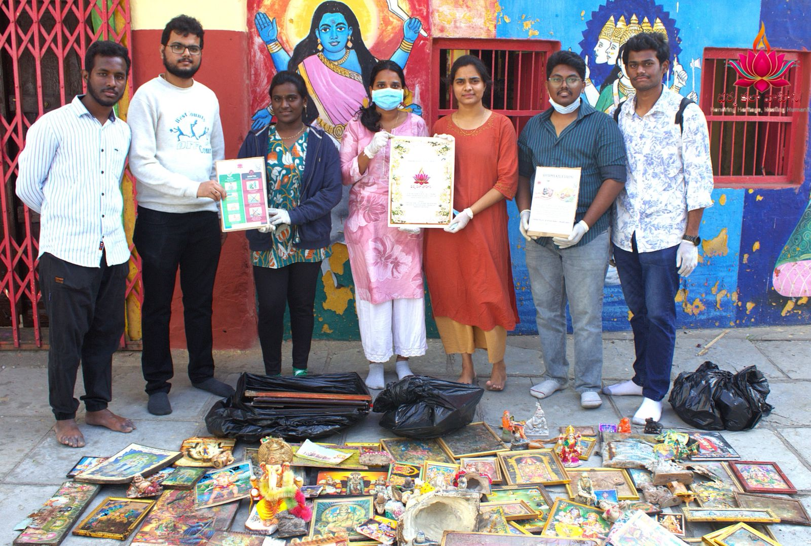

Initiatives that serve, preserve, and uplift our community
⸻ ❋ ⸻
Project 01
Musi River Photo Frame Cleaning Initiative
As part of our environmental and spiritual preservation efforts, Dharma Kala Vahini volunteers organized a cleanup drive near the Musi River where several sacred photo frames had been discarded. Our team carefully collected these frames, cleaned them respectfully, and relocated them to a nearby temple so they could be preserved with dignity. This activity not only helped clean the surroundings but also ensured that religious symbols were treated with proper respect.



❋ ❋ ❋
Project 02
Temple Cleaning Service Activity
Dharma Kala Vahini organized a temple cleaning drive to maintain the purity and peaceful environment of the temple premises. Volunteers gathered early in the day and worked together to sweep the temple grounds, remove waste, and organize the surroundings. This initiative was conducted with the intention of promoting cleanliness, community service, and devotion towards maintaining sacred places.
❋ ❋ ❋
Project 03
Maha Shivaratri Jagaram Spiritual Event
During the auspicious occasion of Maha Shivaratri, Dharma Kala Vahini hosted a special Jagaram event dedicated to Lord Shiva. The night was filled with devotional activities including Shiva idol making, bhajans, chanting of sacred mantras, and spiritual discussions. Participants stayed awake throughout the night in devotion, creating a vibrant and uplifting spiritual atmosphere that brought the community together.